Beagle

- Hypoallergenic: No
- Life expectancy: 12 – 15 years
- Colors:Lemon & White, Tri-color,
Chocolate - Origin: England, United Kingdom
- Height: 36–41 cm
- Temperament: Amiable, Intelligent, Gentel
Boston Terrier
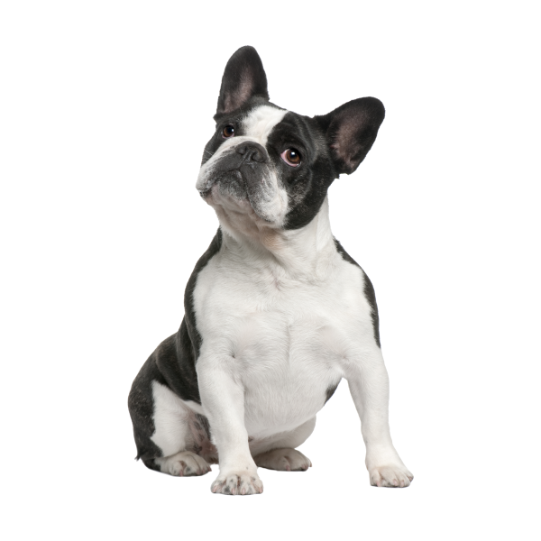- Hypoallergenic: No
- Life expectancy: 13 – 15 years
- Colors: Brindle & White, Seal & White, Black & White
- Origin: United States
- Height: 38 – 43 cm
- Temperament: Friendly, Intelligent, Lively
Cairn Terrier
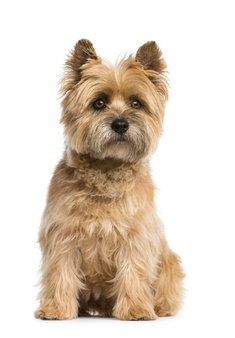- Hypoallergenic: Yes
- Life expectancy: 12 – 15 years
- Colors: Abundant shaggy outer coat, soft downy undercoat
- Origin: Scotland
- Height: 23–33 cm
- Temperament: Gay, Hardy, Assertive, Intelligent
Chihuahua
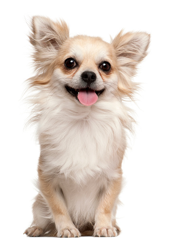- Hypoallergenic: No
- Life expectancy: 12 – 20 years
- Colors: Black, White, Fawn, Chocolate, Cream
- Origin: Mexico
- Height: 15–25 cm
- Temperament: Aggressive, Devoted, Lively, Alert
Cocker Spaniel
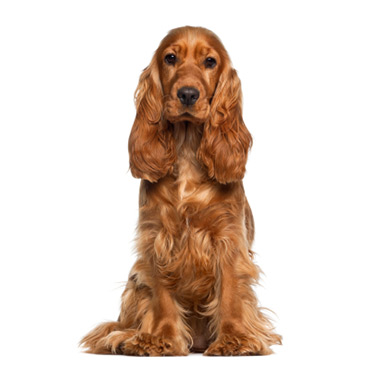- Hypoallergenic: No
- Life expectancy: 12 – 15 years
- Colors: Black, Blue Roan, Orange Roan
- Origin: United Kingdom
- Height: 38–43 cm
- Temperament: Playful, Affectionate, Friendly, Faithful,
Dauchshund
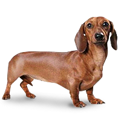- Hypoallergenic: No
- Life expectancy: 12 – 16 years
- Colors: Black, Black & Tan, Chocolate & Tan
- Origin: Germany
- Height: 28-36 cm
- Temperament: Clever, Playful, Stubborn, Devoted
French bulldog
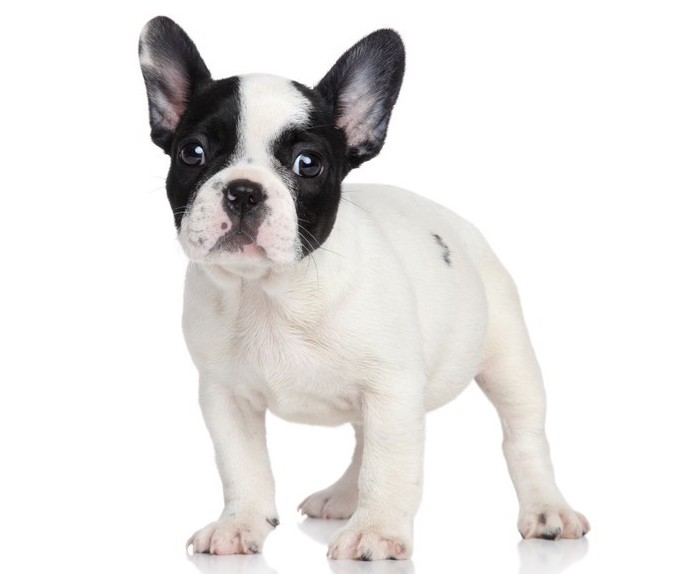- Hypoallergenic: No
- Life expectancy: 10 – 14 years
- Colors:White, Fawn, Brindle, Brindle & White
- Origin: Franch, England
- Height: 46-55 cm
- Temperament: Bright, Playful, Easygoing, Affectionate
Toy poodle
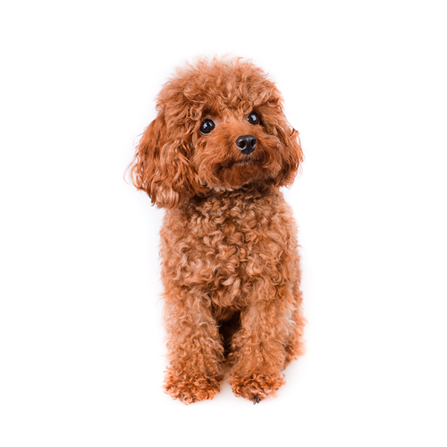- Hypoallergenic: Yes
- Life expectancy: 12 – 15 years
- Colors: Black, White, Apricot,
Cream - Origin: France, Germany
- Height: 24 – 28 cm
- Temperament: Intelligent, Alert, Active, Trainable
Papillon
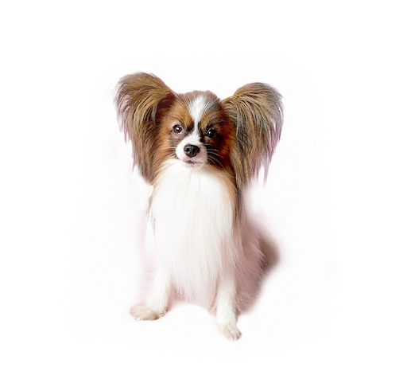- Hypoallergenic: No
- Life expectancy: 13 – 15 years
- Colors: Black, White, Fawn, Chocolate, Cream
- Origin: France, Spain
- Height: 20-28 cm
- Temperament: Intelligent, Happy,
Friendly
Welsh Corgi
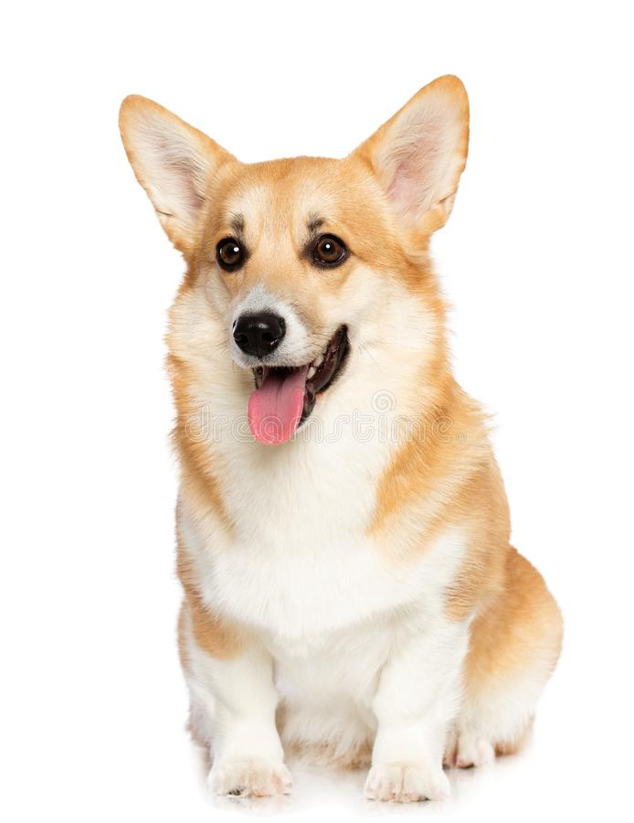- Hypoallergenic: No
- Life expectancy: 12 – 15 years
- Colors: Fawn, Sable, Black & Tan, Black & White, Red
- Origin: Pembrokeshire, Wales
- Height: 36-43 cm
- Temperament: Playful, Outgoing, Tenacious, Friendly
Pomeranian
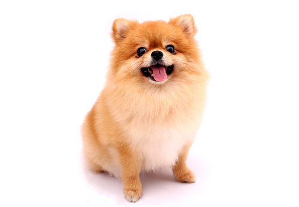- Hypoallergenic: Yes
- Life expectancy: 12 – 16 years
- Colors: Black, White, Apricot,
Cream - Origin: Germany, Poland
- Height: 18-30 cm
- Playful, Extroverted, Intelligent,
Friendly
Pug
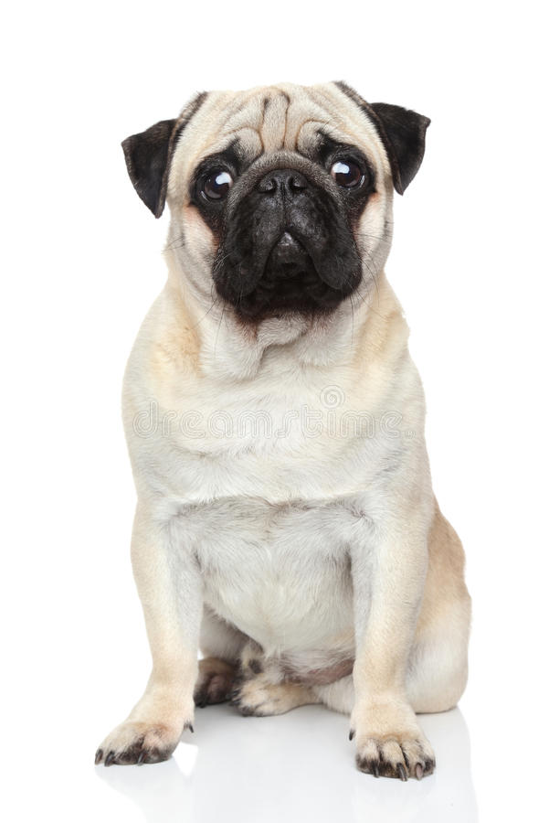- Hypoallergenic: No
- Life expectancy: 12 – 15 years
- Colors: Black, Fawn, Apricot, Silver Fawn
- Origin: China
- Height: 30 – 36 cm
- Temperament: Charming, Clever,
Playful, Mischievous, Stubborn
Jack russell terrier

- Hypoallergenic: No
- Life expectancy: 13 – 16 years
- Colors: Black, Blue Roan, Orange Roan
- Origin: United States, England
- Height: 34–38 cm
- Temperament: Intelligent,Stubborn, Energetic, Fearless, Athletic
Schnauzer
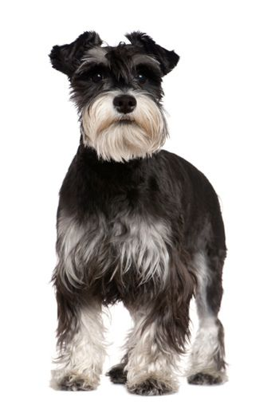- Hypoallergenic: Yes
- Life expectancy: 12 – 15 years
- Colors: Black, White,Salt & Pepper
- Origin: Germany
- Height: 30–36 cm
- Temperament: Intelligent,Obedient, Friendly, Fearless
Yorkshire terrier

- Hypoallergenic: Yes
- Life expectancy: 13 – 16 years
- Colors: Blue & Tan, Black & Tan,
Gold - Origin: England
- Height: 20-28 cm
- Temperament: Intelligent, Bold,
Independent, Confident